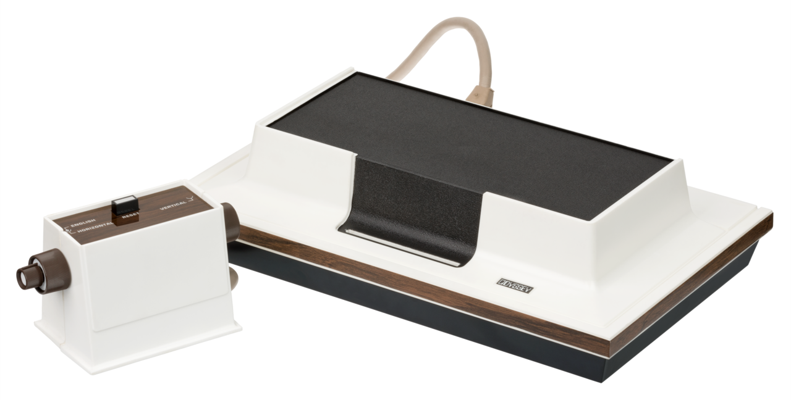

The Magnavox Odyssey (Model 1TL200), the world's first commercial home video game console, released in 1972.
Welcome to the "Living Room Revolution" path. You are standing before a milestone in human play: the Magnavox Odyssey. Take a moment to look at the console. It doesn't look like a modern PlayStation or Xbox, does it? It’s more like a piece of high-end hi-fi equipment from your grandfather’s parlor—woodgrain, beige plastic, and heavy dials.
[Sound of a mechanical switch clicking]In 1972, this was the future. Imagine it’s a rainy Tuesday evening. You’ve just spent one hundred dollars—roughly seven hundred in today’s money. You’ve brought this box home, and for the first time in history, you are about to do something radical: you’re going to talk back to your television.
[Brief static sound, followed by the "blip" of a primitive electronic tone]Before the Odyssey, the TV was a passive window. You watched what the broadcasters sent you. But when Ralph Baer—often called the "Father of Video Games"—conceived of the 'Brown Box' prototype in the late 60s, he saw the TV as a canvas. Look at those two controllers. They’re blocky, rectangular, and they don't have joysticks. Instead, they have three knobs. One for horizontal movement, one for vertical, and a 'Reset' button. It required coordination. It required... imagination.
[Sound of crinkling plastic and paper]Notice the items scattered around the console in the display case. See those colorful plastic sheets? Those are 'overlays.' The Odyssey couldn't actually draw graphics—it could only produce a few white blocks on a black screen. To play 'Haunted House' or 'Football,' you literally taped these transparent sheets onto your TV screen. The Odyssey provided the movement; your imagination—and the plastic sheet—provided the world.
[Pause 3 seconds]Ralph Baer was a Jewish-German refugee who fled the Nazis in 1938. He brought a disciplined, engineering mind to the world of play. He didn't just want to make a game; he wanted to create a standardized system for interactive entertainment. This console you see here is the physical manifestation of that dream—the first time 'software' (in the form of circuit-bridging cards) could change the very nature of a consumer device.
[Sound of the synth melody returning, slightly more triumphant]As you move to the next exhibit, think about this: every time you pick up a controller today, you are echoing the movements of those first Odyssey players in 1972. The blip on the screen was small, but the shockwave it sent through culture was enormous. The Odyssey began here.
[Music fades out slowly]